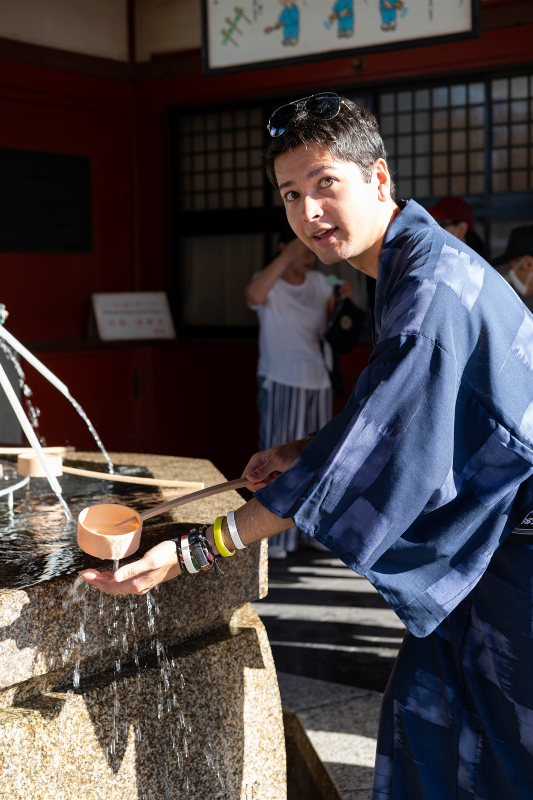

Sony Alpha 7R V
Autofocus IA multi-sujets (humain, animal, insecte), plage dynamique élevée, double slot mémoire et définition 61 MP idéale pour l'animalier, la macro et les grands tirages.

Une image vaut mille mots — chacune raconte une histoire. De la passion au professionnalisme, la photographie s'est imposée comme mon langage.
Autodidacte depuis 2022, j'ai construit une maîtrise rigoureuse de toute la chaîne photographique : du choix optique et de l'éclairage sur le terrain jusqu'au développement et à la colorimétrie en post-traitement.
Basé à Strasbourg dans le Grand Est, je parle couramment français, anglais et allemand. Mon objectif reste constant : capter la justesse d'un instant avec une touche personnelle et soignée.
Autofocus IA multi-sujets (humain, animal, insecte), plage dynamique élevée, double slot mémoire et définition 61 MP idéale pour l'animalier, la macro et les grands tirages.
Boîtier d'appoint en événementiel pour garder deux focales prêtes simultanément et assurer une redondance de sécurité sur le terrain.
Grande ouverture et polyvalence du grand-angle au téléportrait sans changer d'objectif en pleine action, complété au besoin par un filtre Marumi Black Mist 1/2.
Piqué exceptionnel au rapport 1:1 pour la macrophotographie, les textures produits et les portraits serrés à faible profondeur de champ.
Portée légère et mobile pour la faune sauvage, les paysages lointains et les scènes extérieures à distance respectueuse.
Flash cobra tête ronde monté sur griffe en reportage ou déporté sur trépied dans une boîte à lumière octogonale de 60 cm pour des portraits doux partout.